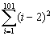
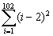

數列的總和(II)
這個程式可以將數列的項目自動加起來，速度較第一版的快十倍以上(以下面例題1作測試)，因此適合計算較多項數的總和，不過操作就較第一版複雜一點。另外，這個程式只含一個K字元，而且程式很簡短(不計數列函數只有5個字元)，故建議不用儲存在F1或F2中(操作只多7下按鍵)，因此可以省下程式並當為內置功能。
| 0 | + | ( | K | + |
數列函數
|
STO F1 |
註1: 第一及第二個輸入項數要同時是雙數或單數(確保項數差為雙數)。
註2: 第三個輸入數為項數差除以2。
註3: 最後答案儲存在K記憶中。
註4: 項數函數的變數為x。
例題1: 計算

(方法一:使用寄存程式)
按 2ndF DEL (必要) 再按 RCL F1 ( 2ndF ALPHA X – 2 ) X2 ∫dx 1 = 101 = 50 = (項差除2)
0 = (顯示答案為328351)
(方法二:不使用寄存程式)
按 0 + 0 = 0 = ← ← ( → + ( 2ndF ALPHA X – 2 ) X2 ∫dx 1 = 101 = 50 = (項差除2) 0 = (顯示答案為328351)
例題 2: 計算

因第一個輸入數值為1(單數)，所以第二個輸入數值不可以是102(雙數)，故改為101(即是102-1)
操作方法與例題1相似，只是將最後按0 = 改為按 ALGB 102 = (顯示答案為338351)
註: 例題1計算101項的總和，這個程式的運算時間約為8秒，若使用第一版程式則約為2分鐘。
相關資料:
數列的總和(I) (Sum of a sequence I)
數列的乘積 (Product of a sequence)